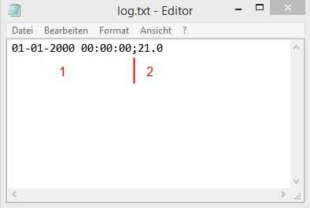

Hilfe Datei zu Brauerei V 1.51 – by Emilio – HOME
Temperatur-Steuerung über Text-Datei:
Die Temperaturmessung erfolgt über die Semikolon getrennte Textdatei. Der Dateiname kann in den Einstellungen angepasst werden. Standardmäßig ist der Dateiname \Temperatur\log.txt eingestellt. Die Hardware für die Temperaturmessung muss eine Log-Datei erzeugen die wie folgt aussieht...

Datum und Uhrzeit des Temperatureintrags ( ist für die Messung unwichtig und kann auch ein beliebig anderer Text sein).
Ist-Temperat des Eintrags (Dezimaltrennzeichen muss ein Punkt sein).
Solche Dateien lassen sich problemlos mit dem USB-China-Sensor oder mit der beliebten DS18B20 Reihe erstellen. Ich selber benutzen ein Arduino-Eigenbau.
Im Verzeichnis Digitemp\ befindet sich eine bei mir unter Windows 8.1 funktionierende Digitemp-Version. Zusätzlich habe ich dort noch einige Batchdateien hinterlegt (Digitemp.bat und Digitemp_variabel.bat...) welche die entsprechende Text-Datei erzeugen. Bei Digitemp.bat muss euer COM-Port des Sensors in der Batchdatei angepasst werden. Bei Digitemp_variabel.bat wird der COM-Port beim Start abgefragt. Diese Batchdateien können direkt aus dem Programm im Einstellungs-Ordner gestartet werden. Mehr dazu in der Hilfe zu den Einstellungen bzw. zur Hardware.
Digitemp hat unter Windows leider das Problem, dass es den Prozessor zwischen zwei Messungen stark auslastet. Für langsame Rechner kann deshalb auch das von mir erstellte DigitempControl benutzt werden. Das Programm startet ein Batchdatei welche nur eine Messung mit Digitemp macht. Im Programm kann dann eingestellt werden in welchem Takt dies wiederholt werden soll. In den Standard-Einstellungen wird dieses Programm übe die Extern_Sensorsoftware.bat gestartet. Das Programm wiederum startet die digtemp_one.bat.
Die Systemlast wird durch Nutzung dieses Programms deutlich reduziert und ist somit besonders für sehr langsame Rechner zu empfehlen.